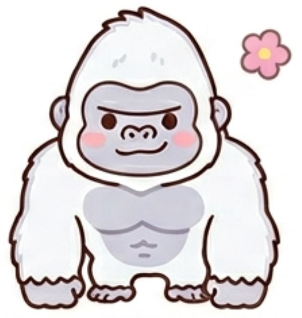

あなたのフレンドタイプは...

GSAH：ド根性シルバーバック
あなたは、自分の中に決してブレない頑固なまでの強い意志を持った、芯の通った人です。しかし、その強い意志を他人にぶつけたり、自分の意見を無理やり押し通して白黒はっきりさせるような議論を起こしたりはしません。グループ全員が笑顔でいられる高い調和の精神を何よりも重んじているからです。
人間関係においては非常に自発的で行動力があり、「みんなで集まろうぜ」と自分から進んで声をかけて人を誘うという、抜群 of 男気・姉御肌な一面を持っています。
自分が声をかけて作った、誰もが心地よく過ごせる平和な空間の中で、内に秘めた独特のユーモアを爆発させます。ここぞという瞬間に奇想天外なボケを放ち、一瞬にして最高の笑いの中心を作り出すタイプです。
友達から見たあなたは、ズバリ「自分から進んで集まりを企画してくれる行動力と、何があってもブレない安心感でみんなを支えてくれる優しい兄貴・姉貴」です。
あなたが自分から「俺の意見に従え！」と強引に周りをコントロールすることはありません。むしろ、自分の声かけで集まった友達が、トゲトゲすることなく楽しそうにワイワイ騒いでいるのを、どっしりと構えて嬉しそうに見守っています。
内面に「こうあるべき」という強い芯があるからこそ、誰かの発言が強すぎて議論がピリつきそうになった時にも、決して動じることなく、さりげなく場の空気をまあるく収めるサポートに入ることができます。
そして、みんなが安心しきっているタイミングで、独自のセンスから生まれる破壊力抜群のボケが飛び出します。友達の間では「シルバーバックが誘ってくれる集まりはいつも平和で一番居心地が良いｗ」「普段どっしり構えてるのに、たまに放つボケが天才的に面白すぎる」と、絶大な信頼と愛着を持たれています。
「みんなで集まろう」と自らフットワーク軽く誘ってくれるため、あなたの声かけによってグループの温かい関係性がいつまでも途切れずに保たれます。
自分の中にしっかりとした軸がありながらも、他人のために一歩引いて全員が笑顔でいられる穏やかな空気を裏から支えてくれます。
常にガツガツ喋るわけではないからこそ、一言のキレが抜群であり、あなたの放つボケはグループの伝説の笑い話になります。
自分から声をかけてみんなの調和を守るスタンスは最高ですが、内面にストレスを溜め込みやすいという罠があります。
場の調和を守りたいという思いと、自分の確固たる意志がぶつかったとき、あなたは「自分が我慢すれば丸く収まる」と、不満を内に溜め込んで頑固に一人で抱え込んでしまいがちです。自分が誘った手前、「ここで自分が空気を壊しちゃダメだ」と責任感を背負い込み、さらに笑いの中心として場を盛り上げようと無理を重ねると、心がエネルギー切れを起こしてしまいます。
たまには「調和を守る頼れる兄貴・姉貴」の役割を休んで、友達からの誘いに100%乗っかって気楽に過ごしてみたり、自分の強い意志をあえて素真に主張して、たまには周りにワガママを言ってみたりしてください。
あなたがたまに見せる「完璧に調和させようとしない、いい意味での脱力感」は、友達にとってさらに親しみやすく、よりお互いの距離を縮めるきっかけになるはずです。